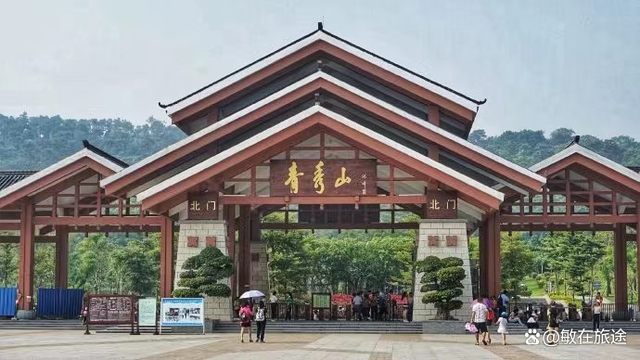
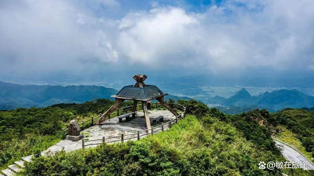
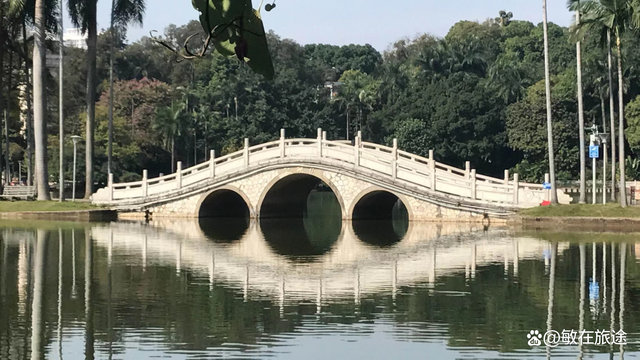
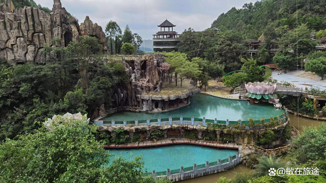

南宁是广西壮族自治区首府,绿色是南宁的标志，半城绿色半城楼，被称为中国绿城，还获得了联合国人居奖。南宁位于北回归线以南，夏长冬短，一年四季都是满眼的绿，任何时候都适合旅游观光。南宁旅游景点有：青秀山、广西民族博物馆、南宁动物园、大明山、人民公园、龙门水都、花花大世界、美丽南方忠良景区、相思小镇、凤江国家森林公园等，都是值得打卡的地方。
城市名片--青秀山 青秀山风景区位于南宁市的邕江江畔，是南宁市最著名的风景区。青秀山群峰起伏、林木青翠、岩幽壁峭、泉清石奇，以南亚热带植物景观为特色，常年云雾环绕，素有城市绿肺、绿城翡翠，壮乡凤凰的美誉，是南宁市最靓丽的城市名片之一。 青秀山更像是一个热带植物森林公园，主要看点是花花草草，景区比较大，徒步走完要一天，园内有观光车来回穿梭。主要景点有兰园，桃花岛，观音禅院、环山秀坪，龙象塔，苏铁园，东盟友谊园等。放眼望去，连绵起伏的群山，郁郁葱葱的绿意，惹人陶醉。山中的一座塔和一眼泉，道尽了青秀山的传奇故事。如果带孩子去，从青秀山西门进，穿过壮锦广场，去户外拓展园玩竞技项目，是孩子的最爱，也可以去大草坪野餐、放风筝。如果是带老人去，可以从北门进，那边有桂花园、兰园和各种奇花异草、盆景，赏心悦目。然后坐景区观光车去观音禅寺烧香拜佛，青秀山是一家人休闲度假的好去处。
绿色明珠--大明山 大明山位于南宁市武鸣区两江镇明山路1号。景区横跨武鸣、上林、马山、宾阳四县，平均海拔一千二百米。丰富的动植物资源，复杂多样的地形，造就了这里多姿多彩的自然景观。南宁大明山似闹市中的仙境，这里有着绝美的景色，令人惊叹的峡谷瀑布、古树和险峰。景区内溪流纵横交错，幽谷密林丛生，雄伟而清秀的橄榄大峡谷是景区内最长的峡谷，峡谷内保存着完好的原始森林，植被丰富，谷底满布怪石奇树，环境清幽。春季百花争艳，绝美的杜鹃，姹紫嫣红，引人注目。夏季飞瀑流泉，气势磅礴，雾气蒸腾，清凉解暑。秋季登飞鹰峰，观赏云海，吸氧润肺，令人心旷神怡。冬季在大明山赏冬雪，观雾凇，玉树琼花，一片洁净世界，大明山是北回归线上的绿色明珠。
 市中心公园--人民公园,南宁市人民公园位于南宁兴宁区新民路44号。著名景点有镇宁炮台、白龙湖、革命烈士纪念碑等等，登上炮台既可俯瞰南宁城全景，是市中心最美的公园。步入公园大门，正对面是一座树木葱茏、端严秀整的山坡，是公园的主体望仙坡，有一条高141级、宽10米的石阶直通山顶。相传晋人罗秀曾在南宁西面的罗秀山上修行得道成仙，望仙坡因与罗秀山遥相对望而得名。镇宁炮台是公园内的最高点，登上炮台可以欣赏南宁城风光。白龙湖是公园的主体，湖心有小岛，岛西的九曲桥和岛北的三孔月桥将岛与湖岸相连。湖面的游艇蓝天下竞渡，绿荫中徜徉。这里还有自然博物馆、海底世界、海狮表演馆、荫生植物园、动植物博物馆等景点。既是小朋友欢乐的天堂，也是市民放松身心、休闲健身的好场所。